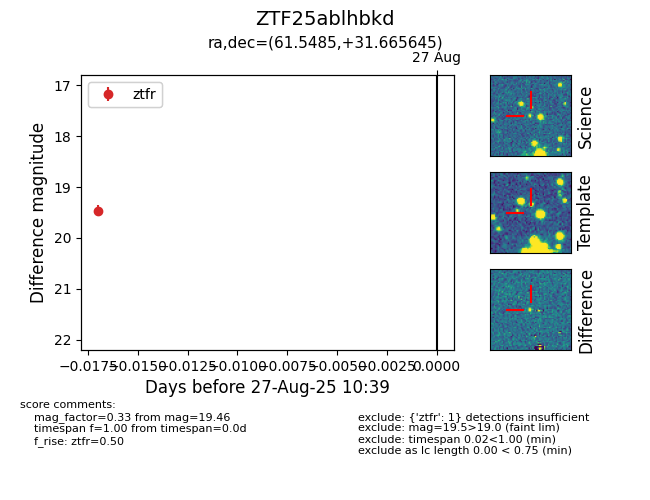

Target ZTF25ablhbkd at 2025-08-27 10:39, see:
FINK: fink-portal.org/ZTF25ablhbkd
Lasair: lasair-ztf.lsst.ac.uk/objects/ZTF25ablhbkd
ALeRCE: alerce.online/object/ZTF25ablhbkd
alt names
ZTF25ablhbkd (ztf,fink)
coordinates:
equatorial (ra, dec) = (61.5485,+31.66565)
galactic (l, b) = (164.4004,-15.11050)
photometry
last ztfr=19.46
1 ztfr detections
